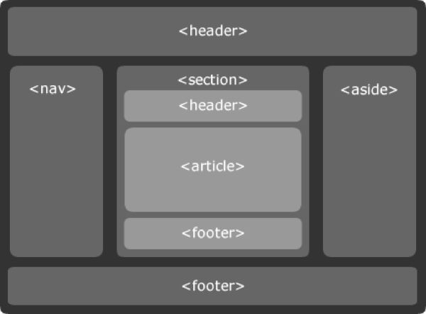

Este site foi criado para compartilhar conteúdos sobre desenvolvimento Front-end, abordando desde conceitos básicos até práticas modernas utilizadas no mercado atual. A proposta é apresentar o aprendizado de forma clara e organizada, permitindo que tanto iniciantes quanto estudantes em evolução consigam acompanhar os temas com facilidade.
Aqui você vai encontrar artigos sobre HTML, CSS e JavaScript, além de dicas de boas práticas, organização de código e criação de interfaces responsivas e acessíveis. Também são explorados conceitos de semântica, performance e padronização, pontos essenciais para quem deseja desenvolver projetos mais profissionais.
O objetivo é ajudar estudantes e iniciantes a evoluírem na área, entendendo não apenas como codar, mas também como pensar em design, usabilidade e experiência do usuário. Afinal, desenvolver para a web vai além da programação: envolve criar soluções intuitivas, inclusivas e eficientes para diferentes públicos e dispositivos.
HTML Semântico

Desenvolvimento da estrutura de páginas utilizando HTML semântico
O HTML semântico organiza o conteúdo da página de forma lógica e significativa. Tags como header, main, section e footer ajudam a estruturar melhor as informações.
Além de deixar o código mais limpo, a semântica melhora a acessibilidade e facilita o entendimento dos mecanismos de busca, contribuindo para SEO.
Boas práticas de HTML semântico
Utilizar HTML semântico corretamente melhora a acessibilidade e facilita a manutenção do código. Além disso, ajuda mecanismos de busca a compreenderem melhor a estrutura da página, contribuindo para SEO e organização do projeto.
CSS Moderno
Aplicando CSS moderno para estilizar e organizar o layout
O CSS é responsável pela aparência do site, definindo cores, fontes, espaçamentos e layouts. Ele transforma a estrutura HTML em uma interface visual agradável.
Com recursos como Flexbox e Grid, é possível criar páginas responsivas que se adaptam a diferentes tamanhos de tela.
Importância da responsividade
Garantir que o site funcione bem em diferentes dispositivos é essencial. A responsividade permite que layouts se adaptem a celulares, tablets e desktops, oferecendo uma experiência de navegação mais confortável ao usuário.
JavaScript - interatividade nas páginas web
Uso de JavaScript para adicionar interatividade à página
O JavaScript traz interatividade para as páginas web. Com ele, é possível criar menus dinâmicos, animações e validações de formulários.
Manipulando o DOM, o JavaScript altera elementos em tempo real, deixando a navegação mais dinâmica e funcional.
Funcionalidades comuns com JavaScript
Entre as aplicações mais comuns estão menus interativos, validação de formulários, modais e animações. Esses recursos tornam a navegação mais dinâmica e melhoram a experiência do usuário.